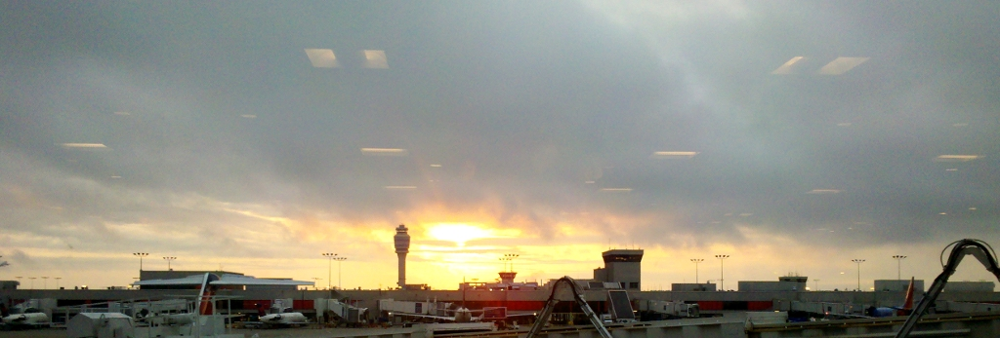

Primeira parte (de um total ainda não estimado) do relato sobre minha participação no ISEA, setembro passado, em Albuquerque, Estados Unidos. Estava tentando terminar o texto antes de publicar, mas fazem semanas que ele congelou. Envio assim para esquecer esse começo e respirar um pouco.
Recostado em uma cadeira pouco confortável do aeroporto de Atlanta, vi o sol nascer alguns minutos após as sete da manhã, horário local. A data, vinte de setembro, me fez pensar na aurora precursora do farol da divindade que abre o hino do Rio Grande do Sul. Um dia me disseram que a cultura gauchesca foi um movimento artificial, articulado por uma classe média urbana em busca de identidade. Lembrei disso ali naquele aeroporto, olhando para os senhores de meia idade vestindo chapéus de cowboy como se não os tirassem nem para dormir, mesmo que a pele branca e fina sugira que não tomam sol há tempos. Até que ponto o cinema de faroeste foi uma influência para que os gaúchos urbanos quisessem buscar a imagem do tipo rude do campo para forjar sua identidade? Qual a profundidade dos tentáculos do império? Era minha primeira vez naquelas terras. Voltei com muito mais perguntas do que respostas. Passados mais de dois meses, faço aqui um esforço para documentar a viagem.

"Aproveitem a Babilônia e o ventre da fera… em tempos de eleição…", dizia a mensagem enviada por um local em meados de setembro à lista Bricolabs, dirigida a mim e outros comparsas a caminho dos Estados Unidos (um artista indonésio, um hacker siciliano, uma produtora chilena, entre outrxs). Acho que é impossível chegar aos Estados Unidos sem preconceitos. Minha formação "cultural" apoiada pela indústria de entretenimento carrega um monte de atitudes, trejeitos e sotaques estadunidenses. E os clichês aparecem de fato. A banca de revistas, naturalmente, só tem revistas estadunidenses. Parece até ridículo esperar revistas de diversos países, como em qualquer outro aeroporto do mundo. Para a esmagadora maioria daquela população, os Estados Unidos não são o centro do mundo: os Estados Unidos são o mundo e ponto. Não existe exterior, só Paris (um parque temático) e Londres (museu pré-histórico). O resto é quintal.
No dia da partida acordei cedo. Faria calor em sampa (bateu nos 34 graus, e ainda nem tinha virado primavera). Saí bem cedo para compensar o péssimo trânsito. O ônibus demorou 74 minutos entre o Aeroporto de Congonhas e a saída para a Marginal Tietê. No total, quase duas horas.
O trecho entre Guarulhos e Atlanta foi tranquilo. Espaço entre poltronas razoável, comida regular. O fone de ouvido era horrível, acabei usando os do meu celular. Avistei uma amiga, algumas fileiras à frente no mesmo avião. A meu lado viajava um estudante de engenharia mineiro, bolsista do programa Ciência sem fronteiras, a caminho de Seattle. Era seu primeiro voo de longa distância. Estávamos cercados (ao lado, na frente e atrás) por mórmons a caráter, o que se repetiria no meu voo de volta ao Brasil. Simpáticos e sorridentes, sempre puxando assunto em um português enrolado. Muito brancos, algo avermelhados pelo sol tropical.
Já em solo estadunidense, a fila da alfândega se dobrava em ziguezague. Vários tipos brasileiros por ali: adolescentes a caminho da Disney; a perua reclamando com a amiga da proximidade com o restante do povo; o playboy mineiro carregando a contragosto a volumosa bagagem de mão da namorada, que tentou deixar no meio da fila para coletar na volta mas voltou atrás quando os seguranças do aeroporto demonstraram preocupação. Viajando sozinho, as idas e voltas da fila acabaram me trazendo alguma familiaridade com aquelas pessoas. Dava para ver quem estava nervoso, com medo de chegar no guichê. Achei curioso que eles disponibilizem intérpretes para quem não fala inglês, constantemente chamados pelo alto-falante. Talvez seja prática corrente em outros países, mas confesso que nunca percebi de modo tão explícito. Também chamou minha atenção o altíssimo pé-direito na área da fila, diferente de experiências mais claustrofóbicas em outros aeroportos. O agente da alfândega não me deu maior problema, depois que mostrei os convites, reserva do hotel e passagem de volta.
Os terminais do aeroporto são conectados por um trem subterrâneo sem tripulantes, como em Zurich. O trem parece recente. Não queria comer muita coisa, e acabei pegando um pacote de batata frita e um suco artificial que lembrava o brasileiro Tampico. Péssima escolha, deixei os dois pela metade. Em meras três horas esperando o voo seguinte, não tive a oportunidade de conhecer Atlanta, uma cidade da qual a única informação que tenho - também adquirida pela indústria do entretenimento - é ser capital da Georgia, estado que baniu as apresentações de Ray Charles no ápice do apartheid sulista. Sei também que Atlanta sediou as Olimpíadas de 1996. Pensei em Barcelona, a sensação de vazio no bairro olímpico. Pensei no Rio. Percebi muitos negros e negras trabalhando nos serviços básicos do aeroporto. Muito mais do que na média dos aeroportos brasileiros, diga-se de passagem. Por outro lado, também notei a ausência de tonalidades intermediárias de pele. Costuma-se repetir que nos EUA existem menos casamentos interraciais. A paisagem humana dentro do aeroporto parecia uma confirmação disso.
Algumas recorrências de clichês eram quase caricaturais. A mulher cheia de penduricalhos dourados falando alto ao telefone com um enrolado sotaque sulista - não era uma sátira, ou pelo menos não intencionalmente. A paranoia de segurança, que já começa antes mesmo do embarque no Brasil com atenção redobrada à identificação do passageiro, além do infame saquinho plástico para separar os líquidos carregados na bagagem de mão, e se estende já em solo americano ao detector de metais de corpo inteiro que evoca aquelas máquinas de Raio X de Total Recall. A impressão de que aquelas pessoas sentem-se verdadeiramente no centro de um mundo cuja dimensão ignoram: são o otimista povo superior que habita a terra escolhida, e têm por missão assegurar um futuro próspero para o mundo livre.
Logo estava embarcando para continuar a viagem. Rumava a Albuquerque, no Novo México, que sediaria a 18a edição do Simpósio Internacional de Arte Eletrônica (ISEA). O tema para este ano era "Machine wilderness", algo como "deserto das máquinas". Fui convidado por Andres Burbano, que coordenava o Fórum Latinoamericano do ISEA, a participar de um painel sobre mapeamento colaborativo e moderar um debate sobre "laboratórios abertos em tempos pós-digitais". Estava lá com o apoio do Edital de Intercâmbio do Ministério da Cultura brasileiro, e levava comigo algumas cópias do meu livro e um flyer em inglês, graças à ajuda do coletivo MutGamb.